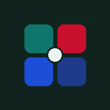

바로가기
아이콘을 눌러 연 뒤 홈 화면에 추가하면 앱 아이콘으로 저장됩니다.

통합앱
허브
가계부
골프
개인비서
자산
단기투자
북아현3
진료일지
아이콘을 누르면 앱 색 화면이 열립니다. [열기]로 바로 쓰거나,
그 화면에서 공유 › 홈 화면에 추가 (iPhone) / 메뉴 › 홈 화면에 추가 (Android) → 이후 홈 화면 아이콘은 바로 웹앱으로 넘어갑니다.
웹앱은 본인 구글 계정에서만 열립니다.